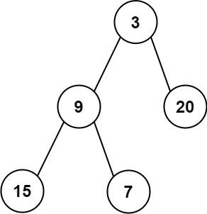

637. 二叉树的层平均值
| 题目信息 | 内容 |
|---|---|
| 难度 | 简单 |
| 核心模式 | BFS 分层，逐层求平均值 |
| 时间复杂度 | O(n) |
| 空间复杂度 | O(w) |
题目与约束
给定一个非空二叉树的根节点 root , 以数组的形式返回每一层节点的平均值。与实际答案相差 10-5 以内的答案可以被接受。
示例 1：

输入：root = [3,9,20,null,null,15,7]
输出：[3.00000,14.50000,11.00000]
解释：第 0 层的平均值为 3,第 1 层的平均值为 14.5,第 2 层的平均值为 11 。
因此返回 [3, 14.5, 11] 。
示例 2:

输入：root = [3,9,20,15,7]
输出：[3.00000,14.50000,11.00000]
提示：
-
树中节点数量在
[1, 104]范围内 -
-231 <= Node.val <= 231 - 1
核心不变量
每一轮 BFS 前先固定队列长度
size，它就是当前层的节点个数；遍历这size个节点累加它们的值，最后用sum / size得到该层平均值。
完整推导
思路推导
- 直觉与痛点（为什么要分层）
题目要的是「每一层」的平均值，而不是整棵树的总平均。如果只是简单 BFS 把所有节点混在一起遍历，就无法知道哪些节点属于同一层，因此必须像「二叉树层序遍历」那样把每一层单独处理。
- 破局思路（快照队列长度 + 逐层求和）
用队列做 BFS，先把根入队。每轮循环开始时，先记录当前队列长度 size，这正是当前层的节点数。然后在 for 循环里严格弹出 size 个节点：累加它们的值，同时把左右孩子入队（孩子属于下一层）。循环结束后 sum / size 就是本层平均值，加入结果数组。
- 关键追问（为什么用快照而非动态 size）
在遍历过程中会不断把下一层的孩子塞进队列，队列长度动态变大。如果直接用 while (!queue.isEmpty()) 里又去读实时长度，就会把不同层混在一起。所以必须在每层开始处理前把 size 固定下来。
- 小例子
root = [3,9,20,null,null,15,7]：第一层 [3] → 平均 3；第二层 [9,20] → 平均 14.5；第三层 [15,7] → 平均 11。结果 [3, 14.5, 11]。
Java 实现（averageOfLevels）
import java.util.*;
class Solution {
public List<Double> averageOfLevels(TreeNode root) {
List<Double> res = new ArrayList<>();
if (root == null) {
return res;
}
Queue<TreeNode> queue = new LinkedList<>();
queue.offer(root);
while (!queue.isEmpty()) {
// 快照：当前层的节点个数
int size = queue.size();
double sum = 0; // 用 double 累加，避免整型除法丢精度
for (int i = 0; i < size; i++) {
TreeNode node = queue.poll();
sum += node.val;
// 孩子属于下一层，先排进队列
if (node.left != null) {
queue.offer(node.left);
}
if (node.right != null) {
queue.offer(node.right);
}
}
// 本层平均值
res.add(sum / size);
}
return res;
}
}
复杂度
- 时间：
O(n)，每个节点恰好入队、出队各一次，并做一次常数时间的累加。 - 空间：
O(w)，w为树的最大宽度；队列中最多同时存放一层节点，最坏（满二叉树最后一层）约为n/2，即O(n)。
易错点与扩展（面试高频考点）
- 整数除法陷阱：
sum必须用double（或先转double），否则sum / size会做整除截断，结果错误。 - 动态
size的坑：for的边界要用循环外固定的int size，不能在循环里反复读queue.size()，否则会把下一层混进来。 - 下标
i与size：每层处理完要重新读取新的size，不能复用上一层的值。 - 空树与单节点：虽然本题保证非空，但实现里加
root == null防御更稳妥；单节点时直接得到[root.val]。 - 扩展（DFS 写法）：也可用 DFS，额外传
level参数，用两个数组分别记录每层的「和」与「节点个数」，回溯时累加，最后逐层相除。BFS 更直观，DFS 空间是O(h)（h为树高），在极深树上更省空间。
力扣原题
C++ 实现
#include <vector>
#include <queue>
using namespace std;
/**
* Definition for a binary tree node.
* struct TreeNode {
* int val;
* TreeNode *left;
* TreeNode *right;
* TreeNode() : val(0), left(nullptr), right(nullptr) {}
* TreeNode(int x) : val(x), left(nullptr), right(nullptr) {}
* TreeNode(int x, TreeNode *left, TreeNode *right) : val(x), left(left), right(right) {}
* };
*/
class Solution {
public:
vector<double> averageOfLevels(TreeNode* root) {
vector<double> res;
if (!root) return res;
queue<TreeNode*> q;
q.push(root);
while (!q.empty()) {
int size = q.size(); // 当前层节点数（快照）
double sum = 0;
for (int i = 0; i < size; i++) {
TreeNode* node = q.front();
q.pop();
sum += node->val;
if (node->left) q.push(node->left);
if (node->right) q.push(node->right);
}
res.push_back(sum / size); // 本层平均值
}
return res;
}
};
Python 实现
import collections
class Solution:
def averageOfLevels(self, root) -> list[float]:
res = []
if root is None:
return res
q = collections.deque([root])
while q:
size = len(q) # 当前层节点数（快照）
total = 0
for _ in range(size):
node = q.popleft()
total += node.val
if node.left:
q.append(node.left)
if node.right:
q.append(node.right)
res.append(total / size) # 本层平均值
return res